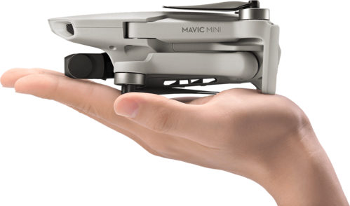

Depuis mon plus jeune âge , j’ai toujours été fasciné par le modélisme (voiture télécommandée, bateau, hélicoptère, drone…). Par la suite j'ai découvert une réel passion pour le drone de loisir, en recevant mon premier drone à 12 ans J’ai eu plusieurs drones de petites tailles et pas chère pour pouvoir apprendre. C’étaient des drones simples, sans aide GPS ni retour vidéo. Ils étaient équipés d’une caméra pour prendre des photos et des vidéos, mais la qualité se limitait à du 720p. Leur batterie se limitait aussi à quelques minutes (autour des 7 minutes).

Par la suite, ayant acquis assez d'expérience, je me suis acheté mon premier « vrai » drone de loisir de la marque DJI. DJI est une entreprise chinoise, leader mondial dans la fabrication de drones de loisir, professionnels et pour entreprise, créée en 2006 par Frank Wang. En savoir plus. J’ai en possession le Mavic Mini qui est le drone le plus abordable de cette marque.
Le Mavic Mini, comme son nom l'indique, est un petit drone pesant seulement 249 grammes. Son poids est un très bon atout pour la réglementation. Il peut être plié pour qu’il puisse être transporté le plus facilement possible. Le drone de sa petite taille peut résister à un vent de 28 km/h maximum.
Le Mavic Mini est aussi équipé d’une caméra pouvant effectuer des photos de 12 Mpx et des vidéos allant jusqu’à la 2,7K par 25 ou 30 images par seconde. La caméra est installée sur une nacelle stabilisée sur 3 axes pour avoir des vidéos très stables même en pleine tempête! La transmission par wifi annoncée est de 2000 mètres. Cependant, la distance se limite plus autour des 400 mètres. L'application (DJI Fly) qui est disponible en branchant son téléphone ou sa tablette à la radiocommande, permet d'avoir le retour vidéo du drone, et plein d'autres informations comme l'altitude, le nombre de satellites, le temps de vol...
Cela va maintenant faire plus de 3 ans que j'ai ce drone et que je l'emmène avec moi pendant les vacances ou des promenades lorsque la réglémentation me le permet. J'ai réalisé un peu plus de 200 photos et vidéos de différents endroits en France.
